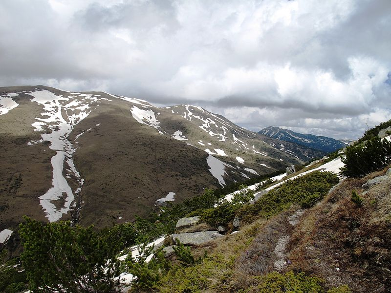
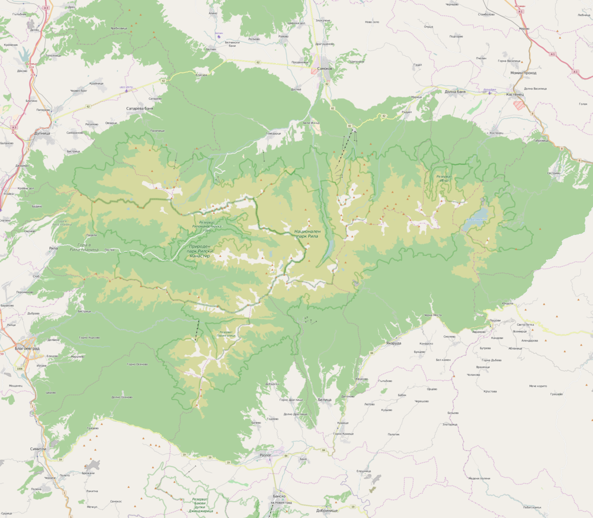
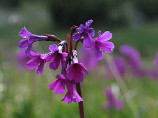
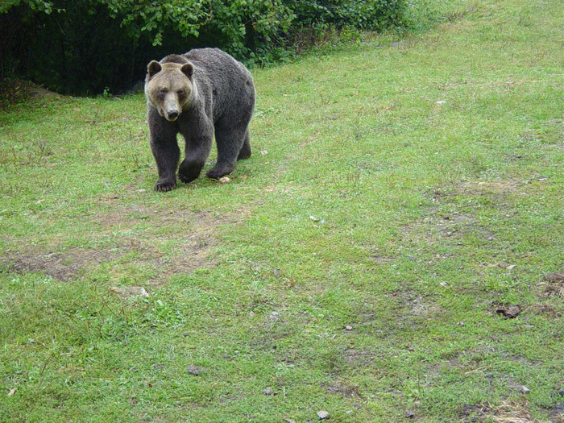

Парангалица
Биосферен резерват "Парангалица", перлата на Рила планина, е резерват от 1933 г.
Името му има гръцки произход и означава забранено, запазено място.
Местоположение

Намира се в южната част на Национален парк "Рила", в Югозападния дял (Капатнишки) дял на река
Благоевградска Бистрица и левия й приток река Хайдушка.Резерватът е разположен върху част от югозападните склонове на Рила планина, между горните течения на реките Бистрица и Хайдушка. Заема най-високите части от водосбора на р. Бистрица. Намира се на 35 км. Източно от гр. Благоевград.
История
Той е вторият най-стар резерват след „Силкосия”. Думата”парангалица” е гръцка и означава запазено, забранено място.
По време на османското робство е използван главно за лов само по изключителното нареждане на султана, предоставено само на
видни първенци и сановници, или на най-уважаваните му гости. Последният турски стопанин на „Парангалица” е бил Гаази Мустафа паша.
През 1913 г. Красивият горски оазис преминава в България. Стопанин му става Миле Георгиев от с. Годлево, който се отличава с особена
предприемчивост. Той решил да построи „чьрк”-дъскорезница, за да извлича неизчерпаемото му дървесно богатство. Това поголовно изсичане
на гората развълнувало обществеността от целия окръг, която му попречва да реализира пагубната си идея. Но чак на 12.12.1933 г.
Министерството на земеделието издава Постановление, за да го обяви за резерват и да запази уникалната смърчова гора.
Скоро и българската лесовидна наука оценява своеобразната красота на местността.
Флора


Резерватът е създаден с цел запазване на вековните смърчови и смърчо-белмурови гори, които се намират на височина от 1750 до 2000 м н.в.
Признато е, че това е едно от най-благоприятните места за отглеждане на смърч в Европа. По-ниските части на резервата са заети от смесени
гори – бук, ела и смърч. Над 2000 метра е клековият пояс, а след това резерватът е зает от пасища. В резервата са установени около 300 вида
висши растения, като 75 вида са включени в Червената книга на България. Установени са 12 вида каменоломки.
В Парангалица се намират най-големите популации на рилска иглика.
Фауна

В резервата се срещат много представители на бозайниците: кафява мечка, благороден елен, сърна, вълк, дива котка. Има голямо разнообразие от птици.
Речната пъстърва се среща често.